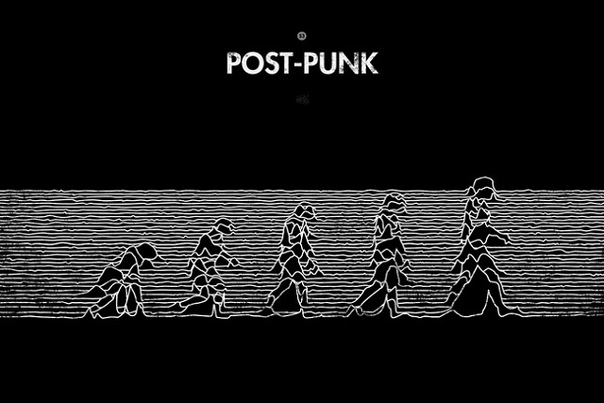

Пост–панк — жанр рок–музыки, сложившийся в конце 1970-х годов в Великобритании как продолжение панк-рока. Жанр постпанк — это в какой–то степени более усложненная и экспериментальная форма панка: в отличие от резкого сухого звучания панк-рока, постпанк отличался большим разнообразием музыкального самовыражения вследствие широкого диапазона влияния на жанр (краут–рок — в первую очередь, такие группы, как Neu! и Can; такие жанры как даб, фанк, диско, экспериментальные альбомы Дэвида Боуи так называемого «берлинского периода», альбомы группы Japan и Дэвида Сильвиана, электронные успехи Kraftwerk).В движении также часто видно пересечение музыки с искусством и политикой, а художники щедро черпали вдохновение из таких источников, как: критическая теория, кино, перфоманс и модернистская литература. Ранние пост–панк группы: Siouxsie and the Banshees, Wire, Public Image Ltd, Devo, Joy Division, Talking Heads, the Pop Group, Gang of Four и Throbbing Gristle.
